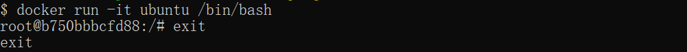
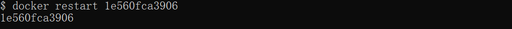
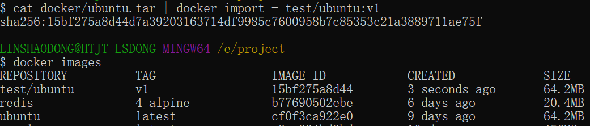
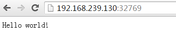

Dockerコンテナの使用
Dockerコンテナは、アプリケーションを実行するための軽量で移植可能な自己完結型のソフトウェア環境です。
Dockerコンテナは、アプリケーションとそのすべての依存関係（ライブラリ、設定ファイル、システムツールなどを含む）を標準化されたパッケージにカプセル化し、アプリケーションをどこでも一貫して実行できるようにします。
コンテナはOSレベルの仮想化であり、完全なOSを実行する必要がないため、起動と実行がより効率的です。
イメージとコンテナの関係
- イメージ（Image）：コンテナの静的テンプレートであり、アプリケーションの実行に必要なすべての依存関係とファイルを含みます。イメージは不変です。
- コンテナ（Container）：イメージの実行インスタンスであり、独自のファイルシステム、プロセス、ネットワークなどを持ち、動的です。コンテナはイメージから起動し、実行中は変更可能な状態を保ちます。

Dockerクライアント
Dockerクライアントは、Dockerデーモン（Docker Daemon）と対話するコマンドラインツールです。
docker クライアントは非常にシンプルで、docker コマンドを直接入力することで、Dockerクライアントのすべてのコマンドオプションを確認できます。
runoob@runoob:~# docker

コマンドを使ってdocker command --help指定したDockerコマンドの使用方法をより深く理解できます。
例えば、確認したいのはdocker statsコマンドの具体的な使用方法：
runoob@runoob:~# docker stats --help

以下はよく使われるDockerクライアントコマンドです：
| コマンド | 機能 | 例 |
|---|---|---|
docker run | 新しいコンテナを起動してコマンドを実行する | docker run -d ubuntu |
docker ps | 現在実行中のコンテナを一覧表示する | docker ps |
docker ps -a | すべてのコンテナを一覧表示する（停止中のコンテナを含む） | docker ps -a |
docker build | Dockerfileを使用してイメージを構築する | docker build -t my-image . |
docker images | ローカルに保存されているすべてのイメージを一覧表示する | docker images |
docker pull | Dockerリポジトリからイメージを取得する | docker pull ubuntu |
docker push | イメージをDockerリポジトリにプッシュする | docker push my-image |
docker exec | 実行中のコンテナでコマンドを実行する | docker exec -it container_name bash |
docker stop | 1つまたは複数のコンテナを停止する | docker stop container_name |
docker start | 停止したコンテナを起動する | docker start container_name |
docker restart | コンテナを再起動する | docker restart container_name |
docker rm | 1つまたは複数のコンテナを削除する | docker rm container_name |
docker rmi | 1つまたは複数のイメージを削除する | docker rmi my-image |
docker logs | コンテナのログを表示する | docker logs container_name |
docker inspect | コンテナまたはイメージの詳細情報を取得する | docker inspect container_name |
docker exec -it | コンテナの対話型ターミナルに入る | docker exec -it container_name /bin/bash |
docker network ls | すべてのDockerネットワークを一覧表示する | docker network ls |
docker volume ls | すべてのDockerボリュームを一覧表示する | docker volume ls |
docker-compose up | マルチコンテナアプリケーションを起動する（docker-compose.ymlファイル） | docker-compose up |
docker-compose down | 停止して削除する（docker-composeによって起動されたコンテナ、ネットワークなど） | docker-compose down |
docker info | Dockerシステムの詳細情報を表示する | docker info |
docker version | Dockerクライアントとデーモンのバージョン情報を表示する | docker version |
docker stats | コンテナのリアルタイムリソース使用状況を表示する | docker stats |
docker login | Dockerリポジトリにログインする | docker login |
docker logout | Dockerリポジトリからログアウトする | docker logout |
よく使うオプションの説明：
-d：コンテナをバックグラウンドで実行する。例：docker run -d ubuntu。-it：対話型ターミナルでコンテナを実行する。例：docker exec -it container_name bash。-t：イメージにタグを指定する。例：docker build -t my-image .。
コンテナの使用
イメージの取得
ローカルにubuntuイメージがない場合は、docker pull コマンドを使用してubuntuイメージを読み込むことができます：
$ docker pull ubuntu
コンテナの起動
次のコマンドは ubuntu イメージを使用してコンテナを起動します。パラメータはコマンドラインモードでそのコンテナに入るためのものです：
$ docker run -it ubuntu /bin/bash

パラメータの説明：
- -i: 対話的操作。
- -t: ターミナル。
- ubuntu: ubuntu イメージ。
- /bin/bash：イメージ名の後にあるのはコマンドです。ここでは対話型シェルを希望するため、/bin/bash を使用します。
ターミナルを終了するには、直接exit:
root@ed09e4490c57:/# exit

停止したコンテナの起動
すべてのコンテナを確認するコマンドは次のとおりです：
$ docker ps -a
画像をクリックすると拡大表示されます：

停止したコンテナを docker start で起動します：
$ docker start b750bbbcfd88

バックグラウンド実行
ほとんどの場合、docker のサービスをバックグラウンドで実行したいので、私たちは-dでコンテナの実行モードを指定できます。
$ docker run -itd --name ubuntu-test ubuntu /bin/bash
画像をクリックすると拡大表示されます：


注：を追加すると-dパラメータはデフォルトではコンテナに入らず、コンテナに入るにはコマンドを使用する必要があります docker exec（後述します）。
コンテナの停止
コンテナを停止するコマンドは次のとおりです：
$ docker stop <容器 ID>

停止したコンテナは docker restart で再起動できます：
$ docker restart <容器 ID>

コンテナに入る
を使用して-dパラメータでコンテナを起動すると、コンテナはバックグラウンドで実行されます。その際、コンテナに入りたい場合は、次のコマンドで入ることができます：
-
docker attach：コンテナの標準入力（stdin）、標準出力（stdout）、標準エラー（stderr）と対話できるようにします。
-
docker exec：docker exec コマンドの使用をお勧めします。このコマンドはコンテナのターミナルを終了しても、コンテナの停止にはつながらないためです。
attach コマンド
docker attach コマンドの使用例：
$ docker attach 1e560fca3906

注意：このコンテナから終了すると、コンテナが停止します。
exec コマンド
docker exec コマンドの使用例：
docker exec -it 243c32535da7 /bin/bash
注意：このコンテナから終了しても、コンテナは停止しません。これが docker exec を使用することが推奨される理由です。docker exec。
その他のパラメータの説明は、を使用してくださいdocker exec --helpコマンドで確認してください。
コンテナのエクスポートとインポート
コンテナのエクスポート
ローカルのコンテナをエクスポートする場合は、を使用できますdocker exportコマンド。
$ docker export 1e560fca3906 > ubuntu.tar
コンテナ 1e560fca3906 のスナップショットをローカルファイル ubuntu.tar にエクスポートします。

これでコンテナのスナップショットがローカルファイルにエクスポートされます。
コンテナスナップショットのインポート
docker import を使用すると、コンテナのスナップショットファイルからイメージとしてインポートできます。次の例では、スナップショットファイル ubuntu.tar をイメージ test/ubuntu:v1 にインポートします：
$ cat docker/ubuntu.tar | docker import - test/ubuntu:v1

さらに、URLまたはディレクトリを指定してインポートすることもできます。例：
$ docker import http://example.com/exampleimage.tgz example/imagerepo
コンテナの削除
コンテナの削除には、を使用しますdocker rmコマンド：
$ docker rm -f 1e560fca3906

次のコマンドで、終了状態にあるすべてのコンテナをクリーンアップできます。
$ docker container prune
Webアプリケーションの実行
先ほど実行したコンテナには特に特別な用途はありませんでした。
次に、docker を使用してWebアプリケーションを構築してみましょう。
dockerコンテナ内でPython Flaskアプリケーションを実行して、Webアプリケーションを起動します。
runoob@runoob:~# docker pull training/webapp # 载入镜像 runoob@runoob:~# docker run -d -P training/webapp python app.py

パラメータの説明：
-
-d:コンテナをバックグラウンドで実行させます。
-
-P:コンテナ内部で使用するネットワークポートを、使用中のホストにランダムにマッピングします。
WEBアプリケーションコンテナの確認
docker ps を使用して、実行中のコンテナを確認します：
runoob@runoob:~# docker ps CONTAINER ID IMAGE COMMAND ... PORTS d3d5e39ed9d3 training/webapp "python app.py" ... 0.0.0.0:32769->5000/tcp
ここにはポート情報も表示されています。
PORTS 0.0.0.0:32769->5000/tcp
Dockerは5000番ポート（Python Flaskのデフォルトポート）をホストのポート32769にマッピングしています。
このとき、ブラウザでWEBアプリケーションにアクセスできます。

-p パラメータを使用して、別のポートを設定することもできます：
runoob@runoob:~$ docker run -d -p 5000:5000 training/webapp python app.py
docker ps実行中のコンテナを確認する
runoob@runoob:~# docker ps CONTAINER ID IMAGE PORTS NAMES bf08b7f2cd89 training/webapp ... 0.0.0.0:5000->5000/tcp wizardly_chandrasekhar d3d5e39ed9d3 training/webapp ... 0.0.0.0:32769->5000/tcp xenodochial_hoov
コンテナ内部の5000番ポートが、ローカルホストの5000番ポートにマッピングされています。
ネットワークポートのショートカット
を通じてdocker psコマンドでコンテナのポートマッピングを確認できます。dockerまた、別のショートカットも提供されています。docker port、を使用するとdocker port指定した（IDまたは名前）コンテナの特定のポートがホストのどのポート番号にマッピングされているかを確認できます。
上記で作成したWebアプリケーションコンテナのIDはbf08b7f2cd89名前はwizardly_chandrasekhar。
次を使用できますdocker port bf08b7f2cd89 或 docker port wizardly_chandrasekharコンテナポートのマッピング状況を確認できます。
runoob@runoob:~$ docker port bf08b7f2cd89 5000/tcp -> 0.0.0.0:5000
runoob@runoob:~$ docker port wizardly_chandrasekhar 5000/tcp -> 0.0.0.0:5000
WEBアプリケーションログの確認
docker logs [IDまたは名前] でコンテナ内部の標準出力を確認できます。
runoob@runoob:~$ docker logs -f bf08b7f2cd89 * Running on http://0.0.0.0:5000/ (Press CTRL+C to quit) 192.168.239.1 - - [09/May/2016 16:30:37] "GET / HTTP/1.1" 200 - 192.168.239.1 - - [09/May/2016 16:30:37] "GET /favicon.ico HTTP/1.1" 404 -
-f: 让 docker logsのように使用してtail -fコンテナ内部の標準出力を出力できます。
上記から、アプリケーションが5000ポートを使用しており、アプリケーションのアクセスログを確認できることがわかります。
WEBアプリケーションコンテナのプロセスを確認する
docker top を使用してコンテナ内部で実行中のプロセスを確認することもできます
runoob@runoob:~$ docker top wizardly_chandrasekhar UID PID PPID ... TIME CMD root 23245 23228 ... 00:00:00 python app.py
WEBアプリケーションを検査する
使用してdocker inspectDockerの基本情報を確認できます。Dockerコンテナの設定と状態情報を記録したJSONファイルが返されます。
runoob@runoob:~$ docker inspect wizardly_chandrasekhar
[
{
"Id": "bf08b7f2cd897b5964943134aa6d373e355c286db9b9885b1f60b6e8f82b2b85",
"Created": "2018-09-17T01:41:26.174228707Z",
"Path": "python",
"Args": [
"app.py"
],
"State": {
"Status": "running",
"Running": true,
"Paused": false,
"Restarting": false,
"OOMKilled": false,
"Dead": false,
"Pid": 23245,
"ExitCode": 0,
"Error": "",
"StartedAt": "2018-09-17T01:41:26.494185806Z",
"FinishedAt": "0001-01-01T00:00:00Z"
},
......
WEBアプリケーションコンテナを停止する
runoob@runoob:~$ docker stop wizardly_chandrasekhar wizardly_chandrasekhar
WEBアプリケーションコンテナを再起動する
停止済みのコンテナは、docker start コマンドで起動できます。
runoob@runoob:~$ docker start wizardly_chandrasekhar wizardly_chandrasekhar
docker ps -l で最後に作成したコンテナを確認：
# docker ps -l CONTAINER ID IMAGE PORTS NAMES bf08b7f2cd89 training/webapp ... 0.0.0.0:5000->5000/tcp wizardly_chandrasekhar
実行中のコンテナは、次を使用してdocker restartコマンドで再起動できます。
WEBアプリケーションコンテナを削除する
docker rm コマンドを使用して不要なコンテナを削除できます
runoob@runoob:~$ docker rm wizardly_chandrasekhar wizardly_chandrasekhar
コンテナを削除する際は、コンテナが停止状態である必要があります。そうでない場合は次のエラーが発生します
runoob@runoob:~$ docker rm wizardly_chandrasekhar Error response from daemon: You cannot remove a running container bf08b7f2cd897b5964943134aa6d373e355c286db9b9885b1f60b6e8f82b2b85. Stop the container before attempting removal or force removeその他の拡張
vfxZhen
orp***010@qq.com
参考アドレス
問題の説明
dockerをインストールした後、docker関連のコマンドを実行すると、次のように表示されます：
原因
dockerマニュアルからの引用：
おおよその意味は：dockerプロセスはTCPポートではなくUnix Socketを使用します。そしてデフォルトでは、Unix socketはrootユーザーに属しているため、アクセスにはroot権限が必要です。
解決方法1
sudoを使用して管理者権限を取得し、dockerコマンドを実行します
解決方法2
dockerデーモンが起動する際、デフォルトでdockerという名前のユーザーグループにUnix socketの読み書き権限を付与します。そのため、dockerユーザーグループを作成し、現在のユーザーをdockerユーザーグループに追加すれば、現在のユーザーはUnix socketにアクセスする権限を持ち、docker関連のコマンドを実行できるようになります。
vfxZhen
orp***010@qq.com
参考アドレス